Generate figures from DESEq2 analysis¶
Load data and generate DE results¶
[1]:
library(tidyverse)
library(DESeq2)
library(dendextend)
library(RColorBrewer)
Registered S3 methods overwritten by 'ggplot2':
method from
[.quosures rlang
c.quosures rlang
print.quosures rlang
── Attaching packages ─────────────────────────────────────── tidyverse 1.2.1 ──
✔ ggplot2 3.1.1 ✔ purrr 0.3.2
✔ tibble 2.1.2 ✔ dplyr 0.8.1
✔ tidyr 0.8.3 ✔ stringr 1.4.0
✔ readr 1.3.1 ✔ forcats 0.4.0
── Conflicts ────────────────────────────────────────── tidyverse_conflicts() ──
✖ dplyr::filter() masks stats::filter()
✖ dplyr::lag() masks stats::lag()
Loading required package: S4Vectors
Loading required package: stats4
Loading required package: BiocGenerics
Loading required package: parallel
Attaching package: ‘BiocGenerics’
The following objects are masked from ‘package:parallel’:
clusterApply, clusterApplyLB, clusterCall, clusterEvalQ,
clusterExport, clusterMap, parApply, parCapply, parLapply,
parLapplyLB, parRapply, parSapply, parSapplyLB
The following objects are masked from ‘package:dplyr’:
combine, intersect, setdiff, union
The following objects are masked from ‘package:stats’:
IQR, mad, sd, var, xtabs
The following objects are masked from ‘package:base’:
anyDuplicated, append, as.data.frame, basename, cbind, colnames,
dirname, do.call, duplicated, eval, evalq, Filter, Find, get, grep,
grepl, intersect, is.unsorted, lapply, Map, mapply, match, mget,
order, paste, pmax, pmax.int, pmin, pmin.int, Position, rank,
rbind, Reduce, rownames, sapply, setdiff, sort, table, tapply,
union, unique, unsplit, which, which.max, which.min
Attaching package: ‘S4Vectors’
The following objects are masked from ‘package:dplyr’:
first, rename
The following object is masked from ‘package:tidyr’:
expand
The following object is masked from ‘package:base’:
expand.grid
Loading required package: IRanges
Attaching package: ‘IRanges’
The following objects are masked from ‘package:dplyr’:
collapse, desc, slice
The following object is masked from ‘package:purrr’:
reduce
Loading required package: GenomicRanges
Loading required package: GenomeInfoDb
Loading required package: SummarizedExperiment
Loading required package: Biobase
Welcome to Bioconductor
Vignettes contain introductory material; view with
'browseVignettes()'. To cite Bioconductor, see
'citation("Biobase")', and for packages 'citation("pkgname")'.
Loading required package: DelayedArray
Loading required package: matrixStats
Attaching package: ‘matrixStats’
The following objects are masked from ‘package:Biobase’:
anyMissing, rowMedians
The following object is masked from ‘package:dplyr’:
count
Loading required package: BiocParallel
Attaching package: ‘DelayedArray’
The following objects are masked from ‘package:matrixStats’:
colMaxs, colMins, colRanges, rowMaxs, rowMins, rowRanges
The following object is masked from ‘package:purrr’:
simplify
The following objects are masked from ‘package:base’:
aperm, apply, rowsum
---------------------
Welcome to dendextend version 1.12.0
Type citation('dendextend') for how to cite the package.
Type browseVignettes(package = 'dendextend') for the package vignette.
The github page is: https://github.com/talgalili/dendextend/
Suggestions and bug-reports can be submitted at: https://github.com/talgalili/dendextend/issues
Or contact: <tal.galili@gmail.com>
To suppress this message use: suppressPackageStartupMessages(library(dendextend))
---------------------
Attaching package: ‘dendextend’
The following object is masked from ‘package:stats’:
cutree
[2]:
curdir <- "/home/jovyan/work/scratch/analysis_output"
imgdir <- file.path(curdir, "img")
imgfile <- file.path(imgdir, "pilotdds2019.RData")
imgfile
attach(imgfile)
tools::md5sum(imgfile)
### List the objects that have been attached
ls(2)
ddsadd <- dds2019
detach(pos = 2)
'/home/jovyan/work/scratch/analysis_output/img/pilotdds2019.RData'
/home/jovyan/work/scratch/analysis_output/img/pilotdds2019.RData: '6632de5c8a2eed06d8c40c958e6f5d03'
'dds2019'
[3]:
### Estimate Size Factors
ddsadd <- estimateSizeFactors(ddsadd)
### Estimate Dispersion parameters (for each gene)
ddsadd <- estimateDispersions(ddsadd)
### Fit NB MLE model
ddsadd <- DESeq(ddsadd)
gene-wise dispersion estimates
mean-dispersion relationship
final dispersion estimates
using pre-existing size factors
estimating dispersions
found already estimated dispersions, replacing these
gene-wise dispersion estimates
mean-dispersion relationship
final dispersion estimates
fitting model and testing
Dot Plots¶
[4]:
### Merge gene expression with meta data
myDEplotData <- function(mydds, geneid, mergelab) {
counts(mydds, normalize = TRUE) %>%
as_tibble(rownames="gene") %>%
filter(gene == geneid) %>%
gather(Label, geneexp, -gene) %>%
select(-gene) -> genedat
colData(mydds) %>%
as.data.frame %>%
as_tibble %>%
full_join(genedat, by = mergelab) -> genedat
return(genedat)
}
### Plot using a single factor
myDEplot0 <- function(mydds, geneid, grpvar, mergelab) {
mydat <- myDEplotData(mydds, geneid, mergelab)
ggplot(mydat, aes_string(x=grpvar, y = "geneexp", col = grpvar))+ geom_point()
}
### Allow for coloring with respect to another factor
myDEplot <- function(mydds, geneid, grpvar, colvar, mergelab) {
mydat <- myDEplotData(mydds, geneid, mergelab)
ggplot(mydat, aes_string(x=grpvar, y = "geneexp", col = colvar))+ geom_point()
}
[5]:
### Stratify by condition color by genotype
myDEplot(ddsadd, "CNAG_00003", "condition", "genotype", "Label")
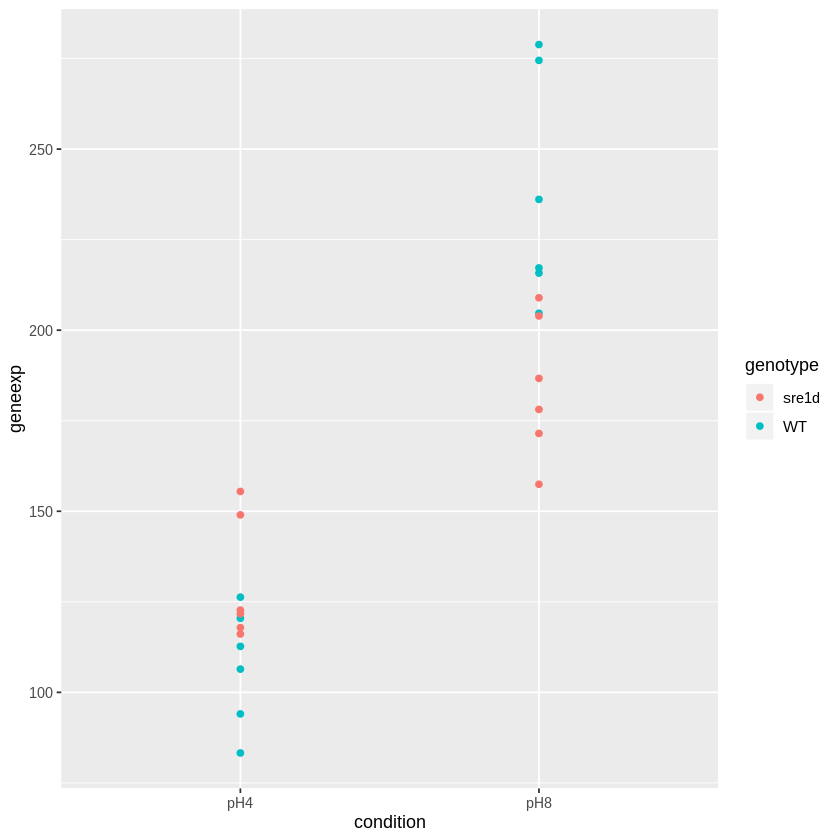
[6]:
### Stratify by genotype color by conditon
myDEplot(ddsadd, "CNAG_00003", "genotype", "condition", "Label")
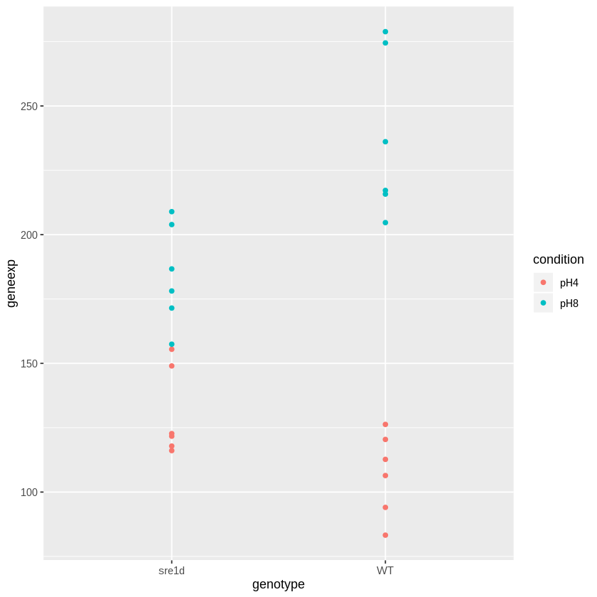
[7]:
### Stratify by genotype
myDEplot0(ddsadd, "CNAG_00003", "genotype", "Label")

Volcano plots¶
[8]:
### Volcano plot for condition effect
ggplot(results(ddsadd, contrast = c("condition", "pH4", "pH8"), tidy = TRUE),
aes(x = log2FoldChange, y = -log10(padj))) + geom_point()
Warning message:
“Removed 348 rows containing missing values (geom_point).”
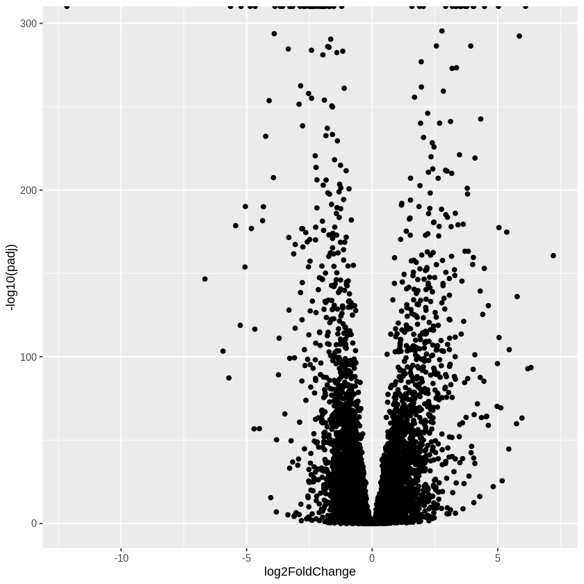
[9]:
### Volcano plot for genotype effect
ggplot(results(ddsadd, contrast = c("genotype", "sre1d", "WT"), tidy = TRUE),
aes(x = log2FoldChange, y = -log10(padj))) + geom_point()
Warning message:
“Removed 348 rows containing missing values (geom_point).”
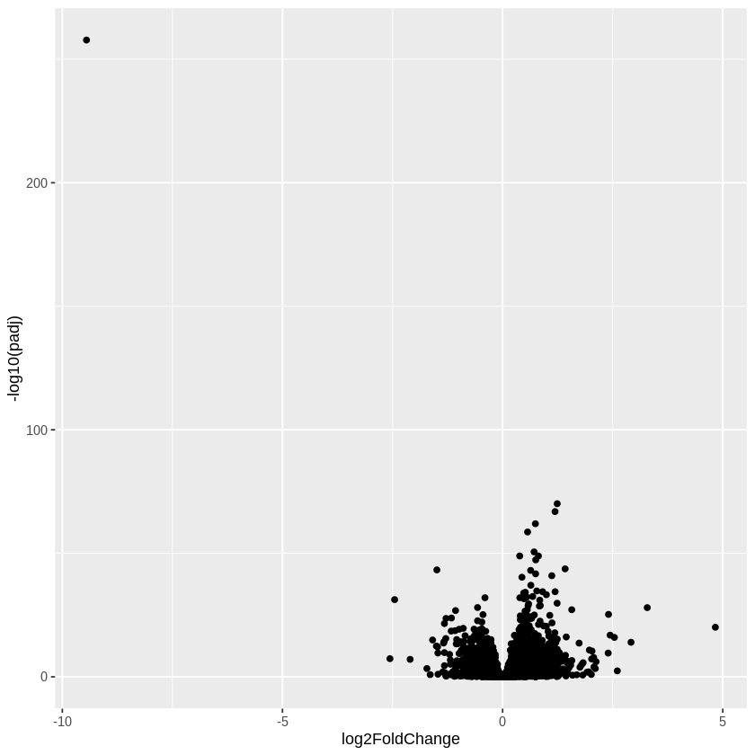
Get “expression” data from counts¶
[10]:
### Normalized counts
normexp <- assay(ddsadd, normalize=TRUE)
class(normexp)
'matrix'
[11]:
### rlog transform
rlexp <- rlog(ddsadd, blind = TRUE)
class(rlexp)
'DESeqTransform'
[12]:
vstexp <- vst(ddsadd)
class(vstexp)
'DESeqTransform'
[13]:
### FPM
fpmexp <- fpm(ddsadd)
class(normexp)
'matrix'
Principal Components Analysis¶
[14]:
### Color by condition
plotPCA(rlexp, intgroup = c("condition"))
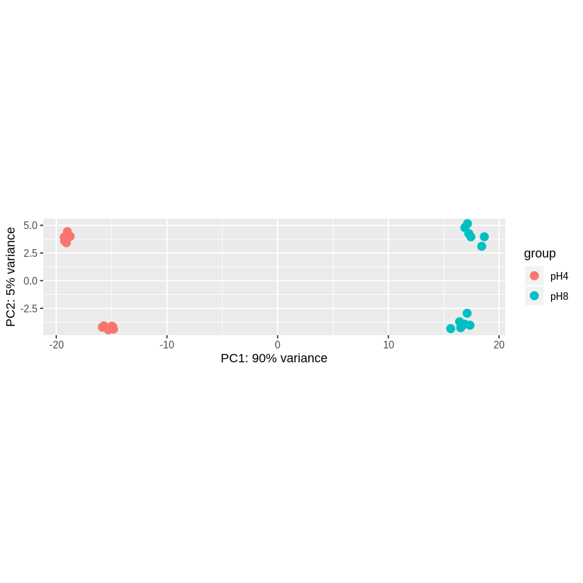
[15]:
### Color by genotype
plotPCA(rlexp, intgroup = c("genotype"))

[16]:
### Color by condition and genotype using rlog and then vst transformed counts
plotPCA(rlexp, intgroup = c("condition", "genotype"))
plotPCA(vstexp, intgroup = c("condition", "genotype"))

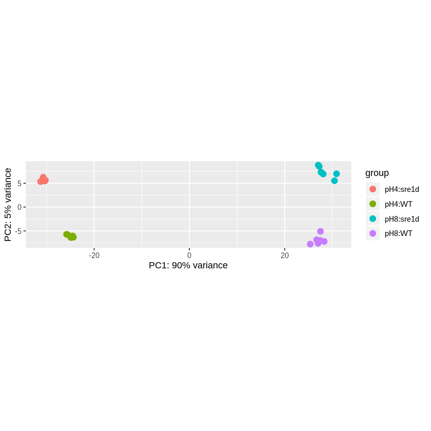
Clustering¶
[ ]:
[17]:
### Simple dendogram with no annotation
options(repr.plot.width = 9, repr.plot.height = 5)
dists <- dist(t(assay(rlexp)))
plot(hclust(dists, metho = "complete"))
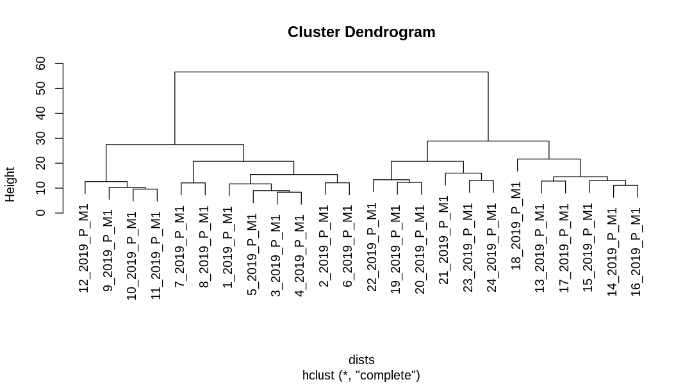
[18]:
### Create dendogram object
assay(rlexp) %>%
t() %>%
dist %>%
hclust(method = "complete") %>%
as.dendrogram -> mydend
[19]:
### Plot dendogram object
plot(mydend)
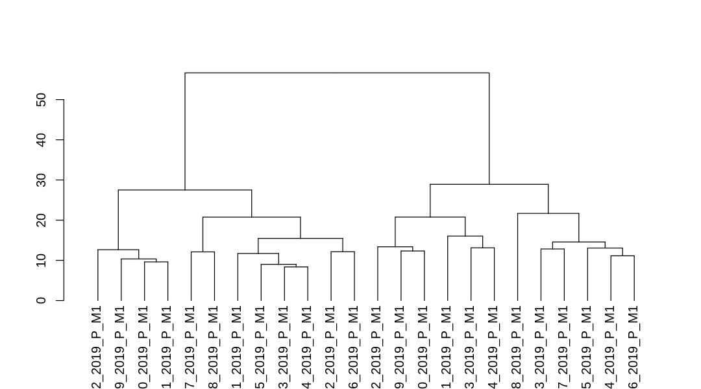
[20]:
### Function to annotate dendogram object
dendplot <- function(mydend, columndata, labvar, colvar, pchvar) {
cols <- factor(columndata[[colvar]][order.dendrogram(mydend)])
collab <- brewer.pal(max(3,nlevels(cols)),"Set1")[cols]
pchs <- factor(columndata[[pchvar]][order.dendrogram(mydend)])
pchlab <- seq_len(nlevels(pchs))[pchs]
lablab <- columndata[[labvar]][order.dendrogram(mydend)]
mydend %>%
set("labels_cex",1) %>%
set("labels_col",collab) %>%
set("leaves_pch",pchlab) %>%
set("labels", lablab)
}
[21]:
### Annotate genotype only
dendplot(mydend, ddsadd@colData,
"genotype", # variable that show in label
"genotype", # variable that define color
"genotype") %>% # variable that define shape of points
plot
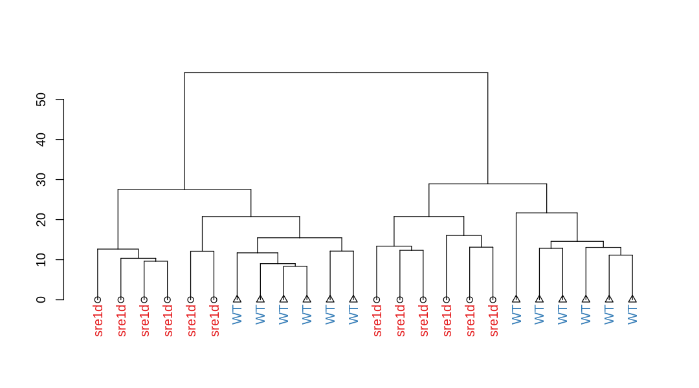
[22]:
### Annotate condition only
dendplot(mydend, ddsadd@colData,
"condition", # variable that show in label
"condition", # variable that define color
"condition") %>% # variable that define shape of points
plot
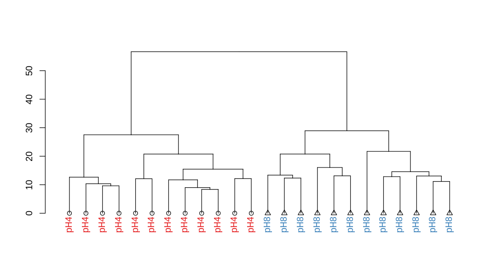
[23]:
### Annotate condition and genotype
dendplot(mydend, ddsadd@colData,
"condition", # variable that show in label
"condition", # variable that define color
"genotype") %>% # variable that define shape of points
plot
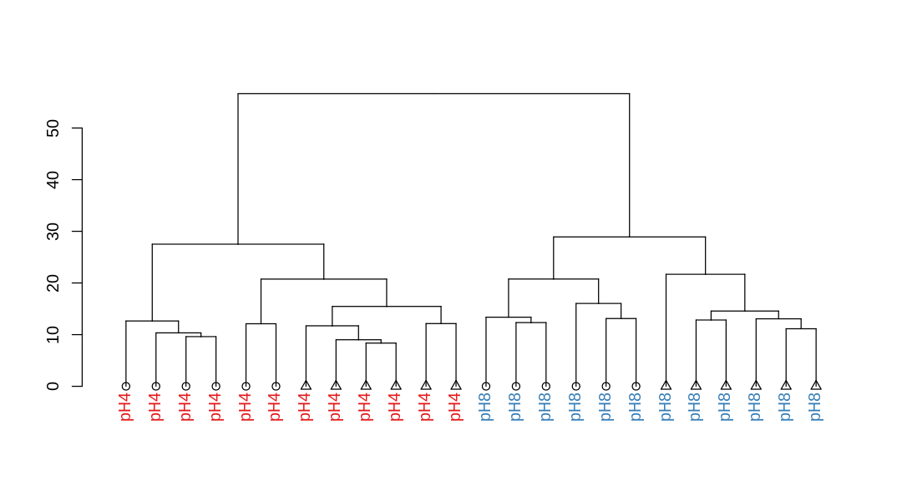
[24]:
sessionInfo()
R version 3.6.0 (2019-04-26)
Platform: x86_64-pc-linux-gnu (64-bit)
Running under: Debian GNU/Linux 9 (stretch)
Matrix products: default
BLAS: /usr/lib/openblas-base/libblas.so.3
LAPACK: /usr/lib/libopenblasp-r0.2.19.so
locale:
[1] LC_CTYPE=en_US.UTF-8 LC_NUMERIC=C
[3] LC_TIME=en_US.UTF-8 LC_COLLATE=en_US.UTF-8
[5] LC_MONETARY=en_US.UTF-8 LC_MESSAGES=en_US.UTF-8
[7] LC_PAPER=en_US.UTF-8 LC_NAME=C
[9] LC_ADDRESS=C LC_TELEPHONE=C
[11] LC_MEASUREMENT=en_US.UTF-8 LC_IDENTIFICATION=C
attached base packages:
[1] parallel stats4 stats graphics grDevices utils datasets
[8] methods base
other attached packages:
[1] RColorBrewer_1.1-2 dendextend_1.12.0
[3] DESeq2_1.24.0 SummarizedExperiment_1.14.0
[5] DelayedArray_0.10.0 BiocParallel_1.18.0
[7] matrixStats_0.54.0 Biobase_2.44.0
[9] GenomicRanges_1.36.0 GenomeInfoDb_1.20.0
[11] IRanges_2.18.1 S4Vectors_0.22.0
[13] BiocGenerics_0.30.0 forcats_0.4.0
[15] stringr_1.4.0 dplyr_0.8.1
[17] purrr_0.3.2 readr_1.3.1
[19] tidyr_0.8.3 tibble_2.1.2
[21] ggplot2_3.1.1 tidyverse_1.2.1
loaded via a namespace (and not attached):
[1] nlme_3.1-139 bitops_1.0-6 bit64_0.9-7
[4] lubridate_1.7.4 httr_1.4.0 repr_1.0.1
[7] tools_3.6.0 backports_1.1.4 R6_2.4.0
[10] rpart_4.1-15 DBI_1.0.0 Hmisc_4.2-0
[13] lazyeval_0.2.2 colorspace_1.4-1 nnet_7.3-12
[16] withr_2.1.2 tidyselect_0.2.5 gridExtra_2.3
[19] bit_1.1-14 compiler_3.6.0 cli_1.1.0
[22] rvest_0.3.4 htmlTable_1.13.1 xml2_1.2.0
[25] labeling_0.3 scales_1.0.0 checkmate_1.9.3
[28] genefilter_1.66.0 pbdZMQ_0.3-3 digest_0.6.19
[31] foreign_0.8-71 XVector_0.24.0 base64enc_0.1-3
[34] pkgconfig_2.0.2 htmltools_0.3.6 htmlwidgets_1.3
[37] rlang_0.3.4 readxl_1.3.1 RSQLite_2.1.1
[40] rstudioapi_0.10 generics_0.0.2 jsonlite_1.6
[43] acepack_1.4.1 RCurl_1.95-4.12 magrittr_1.5
[46] GenomeInfoDbData_1.2.1 Formula_1.2-3 Matrix_1.2-17
[49] Rcpp_1.0.1 IRkernel_1.0.1 munsell_0.5.0
[52] viridis_0.5.1 stringi_1.4.3 zlibbioc_1.30.0
[55] plyr_1.8.4 blob_1.1.1 grid_3.6.0
[58] crayon_1.3.4 lattice_0.20-38 IRdisplay_0.7.0
[61] haven_2.1.0 splines_3.6.0 annotate_1.62.0
[64] hms_0.4.2 locfit_1.5-9.1 knitr_1.23
[67] pillar_1.4.1 uuid_0.1-2 geneplotter_1.62.0
[70] XML_3.98-1.19 glue_1.3.1 evaluate_0.14
[73] latticeExtra_0.6-28 data.table_1.12.2 modelr_0.1.4
[76] cellranger_1.1.0 gtable_0.3.0 assertthat_0.2.1
[79] xfun_0.7 xtable_1.8-4 broom_0.5.2
[82] viridisLite_0.3.0 survival_2.44-1.1 memoise_1.1.0
[85] AnnotationDbi_1.46.0 cluster_2.0.8